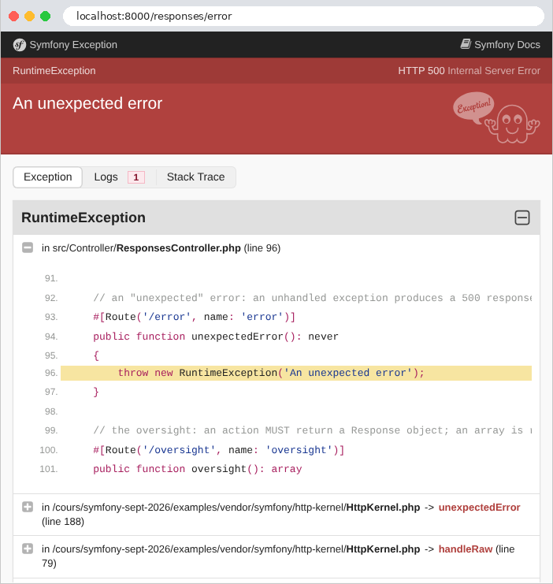

2. Actions, Routing, Antworten
Dieses Kapitel untersucht den Weg, den eine Anfrage vom Browser bis zur Action nimmt, die sie verarbeitet, sowie die Antwort, die diese Action zurückgibt. Views werden erst in Kapitel 4 behandelt: Hier geben Actions Text oder JSON direkt zurück.
2.1. Beispiel 01: Die Struktur einer Symfony-Anwendung
Das erste Beispiel ist die kleinstmögliche [Symfony]-Anwendung. Ein mit [composer create-project symfony/skeleton] erstelltes Projekt enthält etwa zwanzig Dateien und Ordner, und ein mit [symfony new --webapp] erstelltes Projekt enthält noch viel mehr (siehe Einführung); hier behalten wir nur die, ohne die die Anwendung nicht auskommt:
- [public/index.php]: der Einstiegspunkt der Anwendung. Alle HTTP-Anfragen werden, unabhängig von ihrer URL, von dieser Datei verarbeitet. Der Ordner [public] ist der einzige Ordner, den der Webserver ausliefert: Er enthält auch die statischen Dateien (Stylesheets, Bilder, Skripte) und nur diese;
- [src/Kernel.php]: der Kern der Anwendung, der sie zusammensetzt und Anfragen verarbeitet. Der Ordner [src] enthält alle Klassen der Anwendung;
- [config]: die Konfiguration der Anwendung: die Liste ihrer Bundles ([bundles.php]) und die Konfiguration jedes einzelnen (Ordner [packages]);
- [var]: die Dateien, die die Anwendung während des Betriebs schreibt: der Cache (Ordner [var/cache]), in dem [Symfony] die kompilierte Konfiguration ablegt, und später die Sessions. Dieser Ordner wird von [Symfony] bei der ersten Anfrage erstellt;
- [.env]: die Einstellungen der Anwendung in Form von [NAME=value]-Paaren;
- [bin/console]: das Kommandozeilenwerkzeug von [Symfony];
- [composer.json]: die Projektbeschreibung für [Composer].
2.1.1. Einstiegspunkt: public/index.php
- Zeile 1: Eine [PHP]-Datei beginnt mit dem Tag [<?php]. Alles, was folgt, ist [PHP]-Code; eine Datei, die nur Code enthält, schließt dieses Tag nicht;
- Zeile 2: ein Kommentar, von [//] bis zum Zeilenende ([/* ... */] begrenzt einen mehrzeiligen Kommentar);
- Zeilen 4–7: Die Anweisung [use] importiert einen Klassennamen. Der vollständige Name einer Klasse in [PHP] enthält ihren Namespace (namespace), der den Paketen in [Java] entspricht: [Symfony\Component\HttpFoundation\Request] ist die Klasse [Request] im Namespace [Symfony\Component\HttpFoundation]. Nach [use] kann die Datei einfach [Request] schreiben. Die Namen der Klassen von [Symfony] geben an, woher sie stammen: [Component\HttpFoundation], die Komponente, die Anfragen darstellt; HTTP, die Komponente, die Antworten darstellt; [Component\Dotenv], diejenige, die die Datei [.env] liest; [Component\ErrorHandler], diejenige, die Fehler behandelt. [App\Kernel] ist eine Klasse der Anwendung selbst;
- Zeile 11: [require] führt eine andere Datei aus, [PHP]. [__DIR__] ist das Verzeichnis der aktuellen Datei (hier [public]); [dirname(__DIR__, 2)] geht zwei Ebenen nach oben zum Ordner [examples]; der Operator [.] verkettet zwei Zeichenketten. Die Datei [vendor/autoload.php], geschrieben von [Composer], installiert den Class Loader: Beim ersten Gebrauch einer Klasse findet er die Datei, die sie definiert, und lädt sie. Dank ihm müssen Sie für Klassen nie [require] schreiben. Der Ordner [vendor] gehört zum Ordner [examples], der von allen Beispielen gemeinsam genutzt wird (siehe Einführung). Ein [require] gibt den Wert der ausgeführten Datei zurück: [vendor/autoload.php] gibt den Loader zurück, der in der Variablen [$loader] gespeichert wird. In [PHP] beginnt der Name einer Variablen immer mit [$];
- Zeile 12: Der Class Loader von [Composer] kennt die Klassen der Bibliotheken im Ordner [vendor]. Er muss auch die Klassen der Anwendung kennen, die üblicherweise in ihrem Ordner [src] liegen, im Namespace [App]. In einem Standardprojekt erhält [Composer] diese Information aus der Datei [composer.json] des Projekts. Unsere Beispiele teilen sich einen einzigen Ordner namens [vendor], haben aber jeweils einen eigenen Ordner namens [src]: Jedes Beispiel meldet ihn daher selbst dem Loader, über dessen Methode [addPsr4] (der Standard [PSR-4] ordnet Namespaces Ordnern zu: Die Klasse [App\Controller\FirstController] liegt in der Datei [src/Controller/FirstController.php]). Der Operator [->] bezeichnet ein Mitglied eines Objekts. In einer Zeichenkette in einfachen Anführungszeichen steht [\\] für ein einzelnes Zeichen [\];
- Zeile 15: [new Dotenv()] erzeugt ein Objekt der Klasse [Dotenv], dessen Methode [bootEnv] die Datei [.env] (weiter unten vorgestellt) liest und ihre Variablen in den Arrays [$_SERVER] und [$_ENV] von [PHP] ablegt, wo die Anwendung sie findet;
- Zeilen 18–20: der Debug-Modus (die Datei [.env] leitet ihn aus der Umgebung ab; siehe unten). [Debug::enable()] wandelt jeden [PHP]-Fehler – selbst eine einfache Warnung – in eine Exception um, die auf einer detaillierten Fehlerseite angezeigt wird (Beispiel 03). [::] bezeichnet ein Mitglied einer Klasse: [enable] ist eine statische Methode, die ohne Objekt auf der Klasse aufgerufen wird;
- Zeile 23: Erzeugung des Kerns der Anwendung, eines Objekts der Klasse [App\Kernel], mit zwei Parametern: der Umgebung ([dev]) und dem Debug-Modus ([true]). [(bool)] wandelt den Wert in einen booleschen Wert um;
- Zeile 24: [Request::createFromGlobals()] erzeugt aus der von [PHP] empfangenen HTTP-Anfrage ein Objekt [Request] ([PHP] legt sie in seinen „Superglobals“-Arrays [$_GET], [$_POST], [$_COOKIE], [$_SERVER]... ab);
- Zeile 25: Der Kernel verarbeitet die Anfrage ([handle]) und gibt ein Objekt [Response] zurück. Hier geschieht alles: Der Kernel startet (er setzt seine Bundles zusammen und baut seine Services auf), findet die für die Anfrage zuständige Action, führt sie aus und holt die Antwort ab, die sie erzeugt;
- Zeile 26: Die Antwort wird an den Browser gesendet: der Statuscode, die Header und dann der Body;
- Zeile 27: Der Kernel schließt die Anfrage ab: Er führt die Verarbeitungsaufgaben aus, die warten können, bis die Antwort gesendet wurde (siehe das Kapitel über den Lebenszyklus).
Diese vier Zeilen fassen [Symfony] zusammen: Eine Anfrage geht hinein, eine Antwort kommt heraus. Die gesamte Anwendung ist eine Funktion, die ein Objekt [Request] in ein Objekt [Response] umwandelt. Diese Datei ist für alle Beispiele gleich. Sie verdeutlicht auch eine Besonderheit von [PHP]: Die Anwendung wird bei jeder Anfrage neu aufgebaut. Der Webserver führt [public/index.php] für jede empfangene Anfrage von Anfang bis Ende aus: Er lädt die Klassen, baut den Kern auf, verarbeitet die Anfrage, sendet die Antwort und vergisst dann alles. Kein Objekt überlebt von einer Anfrage zur nächsten. Im Kapitel über Datenbereiche werden wir die Folgen dieses Verhaltens sehen, das dem von [Java], [C#] oder [Python] entgegengesetzt ist, deren Anwendungen zwischen den Anfragen im Speicher bleiben.
Den Kernel bei jeder Anfrage aufzubauen wäre teuer, wenn jedes Mal die gesamte Konfiguration neu gelesen und interpretiert werden müsste. [Symfony] tut dies nur einmal: Es kompiliert seine Konfiguration in [PHP]-Code, der im Ordner [var/cache/dev] (für die Umgebung [dev]) abgelegt und anschließend wiederverwendet wird. Im Debug-Modus prüft es bei jeder Anfrage, ob sich eine Konfigurationsdatei geändert hat, und kompiliert gegebenenfalls neu.
Ein typisches [Symfony]-Projekt hat eine kürzere Datei [public/index.php], die diese Aufgabe an die Komponente [Runtime] von [Symfony] delegiert (die Fallstudie verwendet sie): Wir haben uns entschieden, sie ausführlich auszuschreiben, damit wir sehen, was geschieht.
2.1.2. Der Kern: src/Kernel.php
- Zeile 4: der Namespace der Klasse. Ihr vollständiger Name lautet daher [App\Kernel];
- Zeile 11: Die Klasse [Kernel] der Anwendung erbt ([extends]) von der Klasse [Kernel] von [Symfony], die unter dem Namen [BaseKernel] importiert wird (das Schlüsselwort [as] in Zeile 8 benennt den Import um, da beide Klassen denselben Namen tragen). Diese Klasse ist für die Verarbeitung einer Anfrage zuständig ([handle]);
- Zeile 15: Die Anweisung [use] importiert innerhalb einer Klasse keinen Namen, sondern bindet ein Trait ein, ein wiederverwendbares Klassenfragment. [MicroKernelTrait] stattet den Kern mit seinem Standardverhalten aus: Er liest die Liste der Bundles in [config/bundles.php], deren Konfiguration im Ordner [config/packages], die Services in [config/services.yaml] (Beispiel 06) und die Routen in [config/routes.yaml] (Beispiel 02). Er sucht außerdem Routen in der Klasse [Kernel] selbst: Dadurch lässt sich dieses erste Beispiel auf nur diese Klasse reduzieren;
- Zeilen 19–24: eine Action, eine öffentliche Methode, die eine Anfrage verarbeitet. Das Attribut [#[Route('/')]] verknüpft sie mit dem Pfad [/]: Das ist das Routing. Ein [PHP]-Attribut, geschrieben als [#[...]], ist eine an den Code (eine Klasse, eine Methode, einen Parameter) angehängte Information, die [PHP] ignoriert, die aber Bibliotheken lesen: das Äquivalent zu den Annotationen von [Java] oder den Dekoratoren von [Python]. [Symfony] macht davon ausgiebig Gebrauch;
- Zeile 20: [: Response] deklariert den Typ des Rückgabewerts. Typen sind in [PHP] optional, doch wenn sie angegeben sind, prüft [PHP] sie zur Laufzeit;
- Zeile 23: Die Action gibt ein Objekt [Response] zurück, dessen erster Parameter der Body der Antwort ist. Das entspricht der Regel von [Symfony]: Eine Action gibt immer ein Objekt [Response] zurück (Beispiel 03).
2.1.3. Konfiguration: config/bundles.php, config/packages/framework.yaml und .env
[Symfony] besteht aus Bundles: Paketen, die Funktionalität in die Anwendung integrieren ([Twig]-Views, Sicherheit, Datenbankzugriff usw.). Die Liste der Bundles der Anwendung steht in der Datei [config/bundles.php]:
Die Datei gibt ein assoziatives Array zurück: Für jedes Bundle, identifiziert durch seinen Klassennamen ([FrameworkBundle::class] ist der vollständige Klassenname als Zeichenkette), listet sie die Umgebungen auf, in denen es aktiv ist (hier alle). Unsere Anwendung hat nur ein Bundle, FrameworkBundle, den Kern des Frameworks, der die grundlegenden Komponenten zusammenfügt: Anfragen und Antworten, Kernel, Routing, Service-Container, Konsole usw. Die folgenden Beispiele fügen weitere hinzu. Jedes Bundle hat seine eigene Konfiguration im Ordner [config/packages], mit einer Datei pro Bundle, geschrieben in [YAML]:
[YAML] ist ein Textformat, das Daten durch Einrückung beschreibt: [framework] (der Schlüssel für FrameworkBundle) enthält den Schlüssel [secret]. Zeilen, die mit [#] beginnen, sind Kommentare. Der Wert [%env(APP_SECRET)%] ist ein Verweis auf die Variable [APP_SECRET], die aus der Umgebung des Prozesses oder, falls dort nicht vorhanden, aus der Datei [.env] gelesen wird:
- Zeile 3: die Umgebung der Anwendung: [dev] für die Entwicklung, [prod] für die Produktion (und [test] für automatisierte Tests). Die Umgebung bestimmt die Konfiguration: Eine Datei [config/packages/prod/xxx.yaml] würde nur in der Produktion gelesen. Sie legt außerdem den Debug-Modus fest, der standardmäßig außer in der Produktion aktiviert ist (mit der Variablen [APP_DEBUG] ließe er sich anders setzen): Eine unbehandelte Exception zeigt dann eine detaillierte Seite an (Beispiel 03), und [Symfony] kompiliert seine Konfiguration neu, sobald sie sich ändert. Dieser Modus ist ausschließlich für die Entwicklung gedacht: Die Fehlerseite verrät den Quellcode und die Konfiguration der Anwendung;
- Zeile 5: der geheime Schlüssel der Anwendung: eine Zufallszeichenkette, die [Symfony] verwendet, um bestimmte Daten zu signieren (Anmeldelinks, CSRF-Token usw.). Jedes Beispiel hat seinen eigenen.
Anders als bei anderen Frameworks wird die Datei [.env] eines [Symfony]-Projekts üblicherweise zusammen mit dem Quellcode veröffentlicht: Sie enthält die Standardwerte der Variablen, die für die Entwicklung geeignet sind. Installationsspezifische Werte (etwa ein Passwort oder der geheime Schlüssel der Produktion) werden in einer Datei [.env.local] abgelegt, die nach der Hauptdatei gelesen, aber nie veröffentlicht wird; in der Produktion werden diese Werte stattdessen über echte Umgebungsvariablen bereitgestellt, die Vorrang vor beiden Dateien haben. Alles, was in der Konfiguration nicht angegeben ist, behält seinen Standardwert, wie ihn jedes Bundle definiert. Der Befehl [php bin/console config:dump-reference framework] zeigt alle möglichen Schlüssel von FrameworkBundle samt ihren Standardwerten an (mehrere hundert Zeilen).
2.1.4. Das Werkzeug bin/console und die Datei composer.json
Die Datei [bin/console] ist ein [PHP]-Skript, das den Kernel genau wie [public/index.php] aufbaut, aber um einen Befehl auszuführen, statt eine Anfrage zu verarbeiten:
- Zeile 1: Unter [Linux] und [macOS] erlaubt diese Zeile, die Datei direkt auszuführen ([./bin/console]); unter [Windows] geben Sie immer [php bin/console] ein;
- Zeile 17: Die Klasse [Application] von FrameworkBundle ist eine auf dem Kernel aufbauende Kommandozeilenanwendung; sie kennt die Services und die Konfiguration des Kernels. [ArgvInput] stellt die Kommandozeilenparameter dar; [run] führt den angeforderten Befehl aus.
[php bin/console list] zeigt die Liste der verfügbaren Befehle an: in diesem Beispiel etwa vierzig, und mit jedem eingebundenen Bundle kommen weitere hinzu. Wir werden mehrere davon verwenden, darunter [debug:router], [debug:container] und [cache:clear]. Schließlich beschreibt die Datei [composer.json] das Beispiel:
Dies ist ein JSON-Dokument. Es ist nicht für [Composer] enthalten (die Bibliotheken der Beispiele werden durch die Datei [examples/composer.json] beschrieben, siehe Einführung), sondern für den Kern: [Symfony] sucht den Projektordner , indem es von der Datei [src/Kernel.php] aus rückwärts bis zum ersten Ordner geht, der eine Datei namens [composer.json] enthält. Von dieser Datei aus findet es alle anderen ([config], [var], [templates]...). Die Datei [composer.json] eines Standardprojekts enthält außerdem die Liste seiner Bibliotheken und die PSR-4-Regel für seine Klassen (Zeilen 5–9), die unsere Beispiele selbst dem Loader melden (Zeile 12 von [public/index.php]).
2.1.5. Ausführung
Geben Sie in einem Terminalfenster, das im Ordner [01-structure] geöffnet ist, [php -S localhost:8000 -t public] ein. [PHP] zeigt an:
Die Option [-S] startet den Entwicklungsserver, der in [PHP] integriert ist. Er lauscht auf Port 8000 des Rechners selbst ([localhost]): Er akzeptiert nur Anfragen von diesem Rechner, was für die Entwicklung geeignet ist ([-S 0.0.0.0:8000] würde ihn für andere Rechner im Netzwerk öffnen). Die Option [-t public] legt das Verzeichnis [public] als Wurzel der Site fest: Eine in diesem Verzeichnis vorhandene Datei wird unverändert ausgeliefert; jede andere URL wird von [public/index.php] behandelt. Beendet wird er mit [Ctrl-C]. Dieser Server ist für die Entwicklung gedacht: In der Produktion kommt ein Webserver wie [Apache] oder [Nginx] zum Einsatz, in Verbindung mit [PHP-FPM] (siehe Fallstudie). Ein Neustart nach Änderungen am Code oder an der Konfiguration ist nicht nötig: Da [PHP] die Dateien bei jeder Anfrage neu liest, wird die Änderung bei der nächsten Anfrage wirksam. ([Symfony] bietet auch ein eigenes Werkzeug an, das Programm [symfony], dessen Befehl [symfony serve] einen umfangreicheren Server startet; es wird im Anhang beschrieben.)
Fordern wir die URL [http://localhost:8000/] mit einem Browser an:

und dann mit [curl]. Die Option [-i] zeigt zusätzlich die HTTP-Header der Antwort an:
Die erste Zeile der Antwort enthält die Protokollversion, den Statuscode (200) und seine Beschreibung ([OK]). Danach folgen die Header: der angeforderte Host, [Connection: close] (der Entwicklungsserver schließt die Verbindung nach jeder Antwort), die Version von [PHP], eine Cache-Direktive (standardmäßig verhindert [Symfony] , dass Zwischenstellen die Antwort cachen), das Datum, der Inhaltstyp und [X-Robots-Tag: noindex], das Suchmaschinen anweist, die Seite nicht zu indexieren ([Symfony] fügt dies im Debug-Modus hinzu: Eine Site in der Entwicklung muss nicht indexiert werden). Eine Leerzeile trennt die Header vom Body der Antwort. Im weiteren Verlauf dieses Dokuments geben wir die Header [Host], [Connection], [X-Powered-By], [Cache-Control], [Date] und [X-Robots-Tag] nicht mehr an, da sie sich nicht ändern.
Der Header [Content-Type: text/html; charset=UTF-8] zeigt an, dass die Antwort HTML ist, dessen Zeichen in UTF-8 kodiert sind. Das ist die Wahl von [Symfony] für eine Antwort, bei der die Action den Typ nicht angegeben hat: Der Browser interpretiert die Zeichenkette daher als HTML (hier wird sie ohne Tag unverändert angezeigt). Beispiel 03 zeigt, wie ein anderer Typ festgelegt wird. Die Antwort setzt keine Cookies: [Symfony] erstellt nur dann eine Session, wenn die Anwendung sie verwendet (siehe das Kapitel über Datenbereiche).
Bei jeder Anfrage zeigt die Serverkonsole einige Zeilen mit Protokollausgaben an: den Verbindungsaufbau, eine Meldung von [Symfony] , die die gewählte Route angibt, gefolgt von Antwortcode, Methode und Pfad.
Die Meldung [[info] Matched route] stammt aus dem Log (Logger) von [Symfony]: Ohne installierte Logging-Bibliothek schreibt [Symfony] seine Meldungen in die Fehlerausgabe des Prozesses, die der Entwicklungsserver anzeigt. Der Route wurde ein von [Symfony] berechneter Name zugewiesen, nämlich [app_kernel_home] , abgeleitet aus Klassen- und Methodenname: Das folgende Beispiel wird seine Routen automatisch benennen. Nach dieser ersten Anfrage enthält der Ordner [var/cache/dev] die kompilierte Konfiguration: den Container der Anwendung ([App_KernelDevDebugContainer.php], Beispiel 06) und die Routentabelle ([url_matching_routes.php]).
2.2. Beispiel 02: Routing
Das Routing ordnet einer URL und einer HTTP-Methode (GET, POST ...) eine Action zu. Alle Actions direkt im Kernel zu schreiben, würde schnell unleserlich; stattdessen werden sie in Klassen organisiert – den Controllern. Beispiel 02 hat zwei:
Die Dateien [public/index.php], [bin/console], [composer.json], [.env], [config/bundles.php] und [config/packages/framework.yaml] stammen aus Beispiel 01: Wir listen sie nicht erneut auf (nur der Name des Beispiels und der geheime Schlüssel ändern sich). Der Kern [src/Kernel.php] hat keine Funktionalität mehr: Er ist auf seine Klasse und sein Trait reduziert. Jeder Controller ist eine Klasse im Namespace [App\Controller], die im Ordner [src/Controller] liegt: Das ist die Konvention von [Symfony], und der Standard [PSR-4] ordnet beides einander zu (Beispiel 01).
2.2.1. Der Controller HomeController
- Zeile 4: der Namespace der Klasse. Ihr vollständiger Name lautet daher [App\Controller\HomeController];
- Zeile 9: die Klasse. Nach Konvention wird ein Klassenname mit einem Großbuchstaben am Anfang jedes Wortes geschrieben ([HomeController]), während ein Methoden- oder Variablenname mit einem Kleinbuchstaben beginnt ([action01Post]). Ein [Symfony]-Controller muss von keiner Klasse erben (das folgende Beispiel führt die Elternklasse ein, die üblicherweise verwendet wird);
- Zeile 12: das Attribut der Action [#[Route]] mit drei Parametern, von denen zwei benannt sind: Der Wert wird dem Parameter über seinen Namen zugeordnet ([name: 'home']), nicht über seine Position. Der Pfad [/], der Name der Route ([home]), der zur Erzeugung ihrer URL dient (Beispiel 04), und die akzeptierten HTTP-Methoden: [methods: ['GET']]. In [PHP] ist [[a, b]] ein Array (Array). Ohne den Parameter [methods] würde die Route alle Methoden akzeptieren;
- Zeile 13: die Action [index], eine öffentliche Methode der Klasse;
- Zeilen 15–26: eine mehrzeilige Zeichenkette. Die Syntax [<<<'HTML'] ... [HTML] (Nowdoc) begrenzt Text, der unverändert zwischen zwei Zeilen mit demselben Wort geschrieben wird, hier [HTML]; die Einrückung der Abschlusszeile wird von allen Zeilen entfernt. Die Action gibt HTML zurück, das mit dem Typ [text/html] gesendet wird (siehe Beispiel 01).
Die Action [index] gibt somit eine HTML-Seite zurück, die Links auf die Actions des anderen Controllers enthält:

2.2.2. Der Controller FirstController
- Zeilen 10–13: Ein auf die [#[Route]]-Attribut, angewendet auf die Klasse , liefert ein Präfix für die Routen aller ihrer Actions: [/first] für ihre Pfade, [first_] für ihre Namen. Die URL einer Action ist die Verkettung des Präfixes und des Pfads ihrer Route;
- Zeilen 16–20: Der Pfad [''] bezeichnet das Präfix selbst: [GET /first];
- Zeilen 23–34: derselbe Pfad für zwei HTTP-Methoden – [GET] und [POST] –, behandelt von zwei verschiedenen Actions. Der Name einer Action kann frei gewählt werden: Das Attribut [#[Route]] verknüpft sie mit einer URL und einer HTTP-Methode. [methods: ['GET', 'POST']] würde beide Methoden derselben Action zuordnen;
- Zeilen 39–43: [{id}] ist ein Routenparameter: Dieses URL-Segment kann mehrere Werte annehmen. Der Parameter [$id] der Action erhält seinen Wert: Für die URL [/first/products/17] ist es 17. Standardmäßig akzeptiert ein Routenparameter jeden Text ohne Schrägstrich; der Parameter [requirements] schränkt ihn ein: Der reguläre Ausdruck [\d+] (eine oder mehrere Ziffern, wobei [\d] eine Ziffer und [+] die Wiederholung bezeichnet) akzeptiert nur Ziffern. Andernfalls passt die Route nicht. Der Typ [int] des Action-Parameters weist [Symfony] an, den Wert (eine aus der URL extrahierte Zeichenkette) in eine ganze Zahl umzuwandeln. Das ist das Daten-Binding , das das nächste Kapitel ausführlich untersucht. In der in doppelten Anführungszeichen stehenden Zeichenkette ["Product no. $id"] wird die Variable [$id] durch ihren Wert ersetzt: Das ist die Interpolation (eine Zeichenkette in einfachen Anführungszeichen wird dagegen unverändert geschrieben);
- Zeilen 47–51: Zwei Routenparameter werden an zwei Action-Parameter übergeben. [Symfony] ordnet sie über den Namen zu; die Reihenfolge der Action-Parameter spielt keine Rolle. Diesmal stehen die Einschränkungen im Pfad selbst, zwischen [<] und [>]: Das ist kürzer;
- Zeilen 55–60: ein Routenparameter, der [/] enthält. Die Klasse [Requirement] von [Symfony] fasst die gebräuchlichsten regulären Ausdrücke in Form von Konstanten zusammen: [Requirement::CATCH_ALL] ([.+]: beliebige Zeichen, einschließlich Schrägstrichen), [Requirement::DIGITS] ([[0-9]+]), [Requirement::UUID], [Requirement::DATE_YMD]...
2.2.3. Die Konfiguration: config/routes.yaml und config/services.yaml
Es bleibt nur noch, [Symfony] mitzuteilen, wo die Routen zu finden sind:
Die Datei [config/routes.yaml] beschreibt die Routen der Anwendung oder gibt, wie hier, an, wo sie zu finden sind. Der Schlüssel [controllers] ist ein beliebiger Name. Die Ressource [routing.controllers] verweist auf die Routen, die durch die [#[Route]]-Attribute der von der Anwendung erkannten Controller deklariert werden. Und es ist die Datei [config/services.yaml] , die sie der Anwendung bekannt macht:
Diese Datei deklariert die Services der Anwendung: die Objekte, die [Symfony] selbstständig zu erzeugen weiß (Beispiel 06). Die Zeilen 10–11 machen jede Klasse im Ordner [src] zu einem Service. Dank Zeile 8 ([autoconfigure]) untersucht [Symfony] jede von ihnen: Eine Klasse mit einer Methode, die ein [#[Route]]-Attribut trägt, wird zu einem Controller, und ihre Routen werden der Routingtabelle hinzugefügt. Diese beiden Dateien werden wir kaum noch schreiben: Sie sind in allen Beispielen gleich.
2.2.4. Ausführung
Hier die Antworten auf einige Anfragen:
Um eine POST-Anfrage zu senden, verwenden Sie die Option [-X POST] von [curl]:
Die POST-Anfrage wird unverändert akzeptiert: [Symfony] hat keinen CSRF-Schutz, der für alle Anfragen gilt. Es schützt Formulare einzeln mithilfe seiner Form-Komponente (Beispiel 18). Eine HTTP-Methode, die von keiner Action für diesen Pfad behandelt wird, führt zu einem 405-Fehler ([Method Not Allowed]). Der Header [Allow] listet die akzeptierten Methoden auf:
Im Debug-Modus ist der Body der Antwort die detaillierte Fehlerseite von [Symfony] – die wir in Beispiel 03 sehen werden –, der ein HTML-Kommentar vorangestellt ist, der den Fehler zusammenfasst. Die beiden Header [X-Debug-Exception] liefern ebenfalls die Fehlermeldung und die Fehlerstelle, kodiert wie in einer URL ([%20] für ein Leerzeichen ...): Sie sind für Entwicklungswerkzeuge bestimmt. Eine [GET]-Route akzeptiert auch die Methode [HEAD] (dieselbe Anfrage wie GET, jedoch ohne Body der Antwort), die [Symfony] selbst behandelt.
Eine URL, die keine Route behandelt, führt zu einem 404-Fehler. Das gilt auch für einen Bezeichner, der keine Zahl ist: Die Einschränkung [\d+] verhindert, dass die Route auf [/first/products/abc] passt.
In einem Browser, im Debug-Modus:

Die Fehlerseite von [Symfony] erklärt, dass keine Route gefunden wurde („No route found“), und zeigt die vom Router ausgelöste Exception [NotFoundHttpException] an. Kapitel 7 wird zeigen, wie Sie sie durch eine eigene Seite der Anwendung ersetzen. Beachten Sie außerdem, dass [Symfony] zwischen [/first] und [/first/] unterscheidet: Für die zweite URL gibt es keine Route, doch statt einen 404-Fehler zurückzugeben, leitet [Symfony] den Browser (Beispiel 04) auf die erste weiter:
Der Befehl [php bin/console debug:router], ausgeführt im Ordner des Beispiels, listet alle Routen der Anwendung auf:
Jede Zeile nennt den Routennamen, die HTTP-Methode und den Pfad. Die Routennamen in [FirstController] wurden tatsächlich mit [first_] präfixiert. [php bin/console debug:router first_product] würde eine Route im Detail anzeigen (ihre Einschränkung, ihren Controller); [php bin/console router:match /first/products/17] zeigt an, welche Route zu einem Pfad passt.
2.3. Beispiel 03: Antworten einer Action
Was eine Action zurückgibt, bestimmt die HTTP-Antwort. Beispiel 03 geht die wichtigsten Fälle durch:
Der Controller [ResponsesController] ordnet jeder URL [/responses/xxx] eine Action zu:
1 2 3 4 5 6 7 8 9 10 11 12 13 14 15 16 17 18 19 20 21 22 23 24 25 26 27 28 29 30 31 32 33 34 35 36 37 38 39 40 41 42 43 44 45 46 47 48 49 50 51 52 53 54 55 56 57 58 59 60 61 62 63 64 65 66 67 68 69 70 71 72 73 74 75 76 77 78 79 80 81 82 83 84 85 86 87 88 89 90 91 92 93 94 95 96 97 98 99 100 101 102 103 104 105 | |
Gehen wir diesen Code Schritt für Schritt durch:
- Zeilen 13–16: Der Controller erbt von der Klasse [AbstractController] von FrameworkBundle. Das ist die Elternklasse, die Controllern üblicherweise zugewiesen wird: Sie stellt ihnen Shortcuts bereit – Methoden, die die häufigsten Aufgaben in einer einzigen Zeile erledigen: [json], [redirect], [redirectToRoute], [render], [createNotFoundException], [addFlash]... Wir werden ihnen in allen Beispielen begegnen;
- Zeile 15: Das Klassenattribut weist allen Routen ein Pfadpräfix, ein Namenspräfix und die Methode GET zu; jede Action muss nun nur noch ihren Pfad und ihren Namen angeben;
- Zeilen 19–24: [new Response(...)] erzeugt eine vollständige HTTP-Antwort: den Body, den Statuscode und dann die Header, in einem assoziativen Array (einem Array, in dem jedes Element einen Schlüssel hat, hier ['Content-Type'], geschrieben vor dem Pfeil [=>]). Die Klasse [Response] definiert für jeden Statuscode eine Konstante: [Response::HTTP_OK] entspricht 200. Der Header [Content-Type] deklariert hier einfachen Text ([text/plain]): Der Browser interpretiert die Tags nicht;
- Zeilen 27–31: dieselbe Zeichenkette ohne deklarierten Typ: [Symfony] sendet sie mit dem Typ [text/html], und der Browser interpretiert sie;
- Zeilen 35–39: Die Methode [json] von [AbstractController] wandelt ihren Parameter in JSON um und erzeugt eine Antwort vom Typ [application/json] (ein Objekt [JsonResponse], eine Unterklasse von [Response]). Die Umwandlung übernimmt die Komponente Serializer von [Symfony], die mit den Beispielen installiert wird: Ein Objekt wird zu einem JSON-Objekt, dessen Felder seine öffentlichen Eigenschaften sind (und die Ergebnisse seiner Methoden [getXxx], [isXxx] und [hasXxx]). Die Klasse [Person] wird weiter unten beschrieben. Die Action heißt [asJson]: Hieße sie [json], würde sie die von [AbstractController] geerbte Methode [json] überschreiben, und [PHP] würde die Klassenprüfung nicht bestehen, da die beiden Methoden nicht dieselben Parameter haben;
- Zeilen 42–46: ein assoziatives Array [PHP] wird zu einem JSON-Objekt. Das Array [PHP] ist eine Allzweckstruktur: Es ist zugleich Liste und Dictionary;
- Zeilen 49–53: Ein Array mit impliziten Schlüsseln (0, 1, 2) ist eine Liste; es wird zu einem JSON-Array;
- Zeilen 56–62: ein berechnetes Array. Die Funktion [sort] sortiert das Array (sie verändert das Array selbst); [array_map] wendet eine Funktion auf jedes Element an und gibt das Array der Ergebnisse zurück. [fn (int $n) => $n * 10] ist eine Pfeilfunktion: eine anonyme Funktion, die auf einen Ausdruck reduziert ist und dessen Wert sie zurückgibt;
- Zeilen 65–69: Der zweite Parameter von [json] ist der Statuscode: 201 ([Created]) ersetzt 200. Ein dritter, optionaler Parameter würde die Header liefern: [['X-Example' => '03']];
- Zeilen 72–76: Der Code 204 ([No Content]) bedeutet „nichts anzuzeigen“: Die Antwort hat keinen Body ([null]);
- Zeilen 79–83: ein „erwarteter“ Fehler: eine 404-Antwort ([Not Found]) mit einem Body (JSON), den die Action wählt. Der Text steht in Anführungszeichen, weil er einen Apostroph enthält;
- Zeilen 86–90: derselbe Fehler, ausgelöst durch eine Exception. [createNotFoundException] wirft eine Exception [NotFoundHttpException] (eine HTTP-Exception, die den Code 404 trägt); die Anweisung [throw] löst sie aus und unterbricht damit die Action. [Symfony] wandelt sie in eine Fehlerantwort um. Der Typ [never] zeigt an, dass die Methode niemals normal endet. Dies ist die gebräuchlichste Art, eine Action wegen eines Fehlers zu beenden, selbst tief in einer Funktion, die von der Action aufgerufen wird;
- Zeilen 93–97: ein „unerwarteter“ Fehler – eine Exception, die niemand behandelt – erzeugt eine 500-Antwort ([Internal Server Error]). [RuntimeException] ist eine Exception-Klasse aus der Standardbibliothek von [PHP], die wie jede andere Klasse durch ein [use] (Zeile 7) importiert wird;
- Zeilen 100–104: der Fehler, den es zu vermeiden gilt. Eine [Symfony]-Action muss ein [Response]-Objekt zurückgeben; diese gibt ein Array zurück, das [Symfony] ablehnt (die Antwort sehen wir weiter unten). Das unterscheidet sich von anderen Frameworks wie [Laravel], die ein Array selbst in JSON umwandeln: [Symfony] bevorzugt, dass die Action die gewünschte Antwort ausdrücklich angibt.
Die Klasse [Person]:
- Zeile 8: [readonly] macht alle Eigenschaften der Klasse nach ihrer Initialisierung unveränderbar: Ein [Person]-Objekt ist unveränderlich;
- Zeilen 10–14: [__construct] ist der Konstruktor der Klasse, aufgerufen durch [new Person('Martin', 'Jean', 42)]. Seine Parameter, denen [public] vorangestellt ist, werden befördert (Promoted Properties): Jeder deklariert eine Eigenschaft gleichen Namens, die durch den Parameter initialisiert wird. Diese Syntax erspart es, die Eigenschaften zu deklarieren und sie dann im Rumpf des Konstruktors (der hier leer ist) einzeln zuzuweisen. Die Eigenschaften sind öffentlich: Der Serializer kann sie sehen. Es besteht keine Pflicht, diese Klasse in einem Ordner namens [Model] abzulegen; das ist eine Entscheidung, die in diesem Dokument getroffen wurde.
Bleibt noch die Datei [src/EventListener/ReadableJson.php]:
Standardmäßig enthält eine [JsonResponse]-Antwort kompaktes, einzeiliges JSON, in dem Nicht-ASCII-Zeichen als Escape-Sequenzen geschrieben werden: [é] becomes [é], was gültiges JSON, aber wenig lesbar ist. Für die Beispiele in diesem Kurs wünschen wir uns ein lesbares JSON. Statt es in jeder Action anzufordern, ändern wir alle JSON-Antworten der Anwendung mithilfe des zentralen Mechanismus von [Symfony]: Ereignisse.
Um eine Anfrage zu verarbeiten, durchläuft der [Symfony]-Kern eine Reihe von Schritten und löst bei jedem Schritt ein Ereignis aus: [kernel.request] , wenn die Anfrage eintrifft, [kernel.controller] , wenn die Action ausgewählt wurde, [kernel.response] , wenn die Antwort erzeugt wurde, und so weiter. (Das Kapitel über den Lebenszyklus behandelt sie alle.) Ein Listener (Listener) ist eine Klasse, die [Symfony] für jedes Ereignis eines bestimmten Typs aufruft; er kann die vom Ereignis getragenen Daten einsehen und verändern. So ist [Symfony] selbst aufgebaut: Routing, Sicherheit und Session sind Listener.
- Zeile 13: Das Attribut [#[AsEventListener]] macht die Klasse zu einem Listener für das Ereignis [kernel.response] (die Konstante [KernelEvents::RESPONSE]). Mehr ist nicht zu deklarieren: Die Klasse ist ein Service (Beispiel 02), und [Symfony] liest ihre Attribute ([autoconfigure]);
- Zeile 16: Ein an einer Klasse deklarierter Listener wird über seine Methode [__invoke] aufgerufen. Sie erhält das Ereignis, ein [ResponseEvent]-Objekt, das die Anfrage und die Antwort trägt;
- Zeilen 18–24: Ist die Antwort eine JSON-Antwort (der Operator [instanceof] prüft die Klasse eines Objekts), ändert der Listener ihre Kodierungsoptionen: Nicht-ASCII-Zeichen und Schrägstriche werden unverändert geschrieben, mit eingerückter Formatierung. Der Operator [|] kombiniert die drei Optionen, bei denen es sich um Konstanten von [PHP] handelt; [setEncodingOptions] kodiert die Daten der Antwort neu.
Die Beispiele 05 bis 12 verwenden diesen Listener wieder. Der Befehl [php bin/console debug:event-dispatcher kernel.response] listet die Ereignis-Listener auf: Unserer befindet sich unter denen von [Symfony].
In einem Browser ist der Unterschied zwischen [text/plain] und [text/html] sichtbar:


Hier die Ergebnisse für die übrigen Actions:
Das Objekt wurde in ein JSON-Objekt umgewandelt, mit einem Feld pro öffentlicher Eigenschaft. Die Action [/responses/array] erzeugt genau dieselbe Antwort.
Die Exception-Antwort ist die detaillierte Fehlerseite von [Symfony], dieselbe wie in Beispiel 02, mit unserer Meldung. Fordert der Client über den Header [Accept: application/json] (Option [-H] von [curl]) eine JSON-Antwort an, passt [Symfony] seine Fehlerantwort an, die zu einem JSON-Dokument wird (unter Verwendung des Serializers):
Das Dokument folgt dem Standard „Problem Details“ (RFC 7807): einem Typ, einem Titel, dem Code und dem Detail (unsere Meldung). Im Debug-Modus enthält es außerdem den Namen der Exception und den Aufrufstack ([trace], die Liste der Funktionen, die zum Zeitpunkt des Fehlers ausgeführt wurden). Dieses Dokument ist keine von einer Action erzeugte [JsonResponse]; daher hat unser Listener es nicht formatiert. Der Header [Vary: Accept] teilt Caches mit, dass die Antwort vom Header [Accept] der Anfrage abhängt.
Bleibt die unbehandelte Exception. Im Debug-Modus zeigt der Browser die Fehlerseite von [Symfony]: Typ und Meldung der Exception, die Datei und die Zeile, in der sie ausgelöst wurde, samt dem umgebenden Code, gefolgt vom Aufrufstack, vom jüngsten zum ältesten Eintrag:

Die erste Funktion im Stack ist unsere Action [unexpectedError] in Zeile 96 der Datei [ResponsesController.php]. Es folgen die Kernel-Methoden, die sie aufgerufen haben ([HttpKernel::handleRaw], [HttpKernel::handle], [Kernel::handle] ...), bis hinunter zu [public/index.php]. Der Tab „Logs“ zeigt die Logmeldungen an, die während der Anfrage erzeugt wurden. Deshalb darf der Debug-Modus niemals auf einem Server aktiviert sein, der für andere erreichbar ist. Der Fehler wird auch in das Log der Anwendung geschrieben – hier die Serverkonsole:
Ohne Debug-Modus ([APP_ENV=prod] in der Datei [.env]) erzeugt dieselbe Anfrage eine knappe Fehlerseite, die nichts über den Code verrät:
und das JSON-Dokument enthält nun nur noch den Code und seine Bezeichnung (["detail":"Not Found"]), ohne unsere Meldung und ohne den Aufrufstack. Kapitel 7 zeigt, wie sich eine anwendungsspezifische Fehlerseite anzeigen lässt. (Nach der Bereitstellung in der Produktion müssen Sie den Ordner [var/cache/prod] löschen oder [php bin/console cache:clear] ausführen: In der Produktion prüft [Symfony] nicht mehr, ob sich seine Konfiguration geändert hat.)
Schließlich die Action, die kein [Response]-Objekt zurückgibt:
Die Meldung ist eindeutig: „The controller must return a Response object, but it returned an array.“ Im Kapitel über den Lebenszyklus werden wir sehen, dass das nicht ganz stimmt: Ein Listener für das Ereignis [kernel.view] könnte das Array selbst in eine Antwort umwandeln.
2.4. Beispiel 04: Weiterleitungen
Eine Weiterleitung ist eine Antwort, die den Browser anweist, eine andere URL abzurufen: ein 3xx-Statuscode und der Header [Location], der die neue Adresse enthält. Der Browser sendet sofort eine zweite Anfrage an diese Adresse. Der Controller [RedirectsController]:
- Zeile 11: ein Klassenattribut [#[Route]] ohne Pfad: Es weist allen Routen lediglich die Methode GET zu;
- Zeilen 15–19: Die Methode [redirect] von [AbstractController] erzeugt eine Weiterleitungsantwort (ein [RedirectResponse]-Objekt) an die angegebene Adresse. Der Code 301 ([Moved Permanently]) bedeutet, dass die Seite ihre Adresse dauerhaft geändert hat: Der Browser (und Suchmaschinen) können sich die neue merken;
- Zeilen 29–33: Ohne zweiten Parameter erzeugt [redirect] eine temporäre Weiterleitung mit dem Statuscode 302 ([Found]). Die URL wird durch Verkettung von Textsegmenten (den Operator [.]) aufgebaut, was ein Problem darstellt, wie wir sehen werden;
- Zeilen 37–41: [redirectToRoute] erzeugt eine Weiterleitung zu einer Route , die über ihren Namen (['page']) identifiziert wird, nicht über ihren Pfad. Das assoziative Array liefert die Parameter der Route (hier [name]), korrekt für eine URL kodiert. Wird der Pfad der Route [page] einmal geändert, passen sich die Weiterleitungen dorthin automatisch an;
- Zeile 44: der Name der Route, [page], der durch das Attribut vergeben wird;
- Zeilen 51–55: eine Weiterleitung zu einer anderen Website; die Adresse wird unverändert übernommen.
Die Antworten mit [curl] (das ohne Optionen Weiterleitungen nicht folgt):
Der Header [Location] enthält die Adresse so, wie die Action sie geliefert hat, relativ zur Website: Der Browser ergänzt Protokoll, Host und Port der aktuellen Seite. Die Antwort enthält außerdem einen kurzen HTML-Body für einen Client, der Weiterleitungen nicht folgen würde. Die Option [-L] von [curl] folgt der Weiterleitung, genau wie ein Browser es tun würde:
Vergleichen wir nun die beiden berechneten Weiterleitungen mit einem Ziel, das ein Fragezeichen enthält, das in der URL als [%3F] kodiert ist (ein nicht kodiertes [?] würde die Parameter der URL einleiten):
[Symfony] hat den Routenparameter dekodiert, bevor es ihn verarbeitet: [$destination] ist gleich [a?b]. Die erste Action setzt ihn unverändert wieder in die Adresse ein: [/page/a?b], was der Browser als Pfad [/page/a] gefolgt vom Parameter [b] interpretiert. Die zweite Action folgt der benannten Route, deren Parameter erneut kodiert wird: [/page/a%3Fb]. Wir folgen den Weiterleitungen:
Nur die zweite führt zur richtigen Seite. Daraus folgt die Regel: Eine Adresse, die einen variablen Wert enthält, wird aus dem Namen ihrer Route aufgebaut ([redirectToRoute] und in den Views die Funktion [path]), niemals durch Verkettung von Zeichenketten. Im Browser sehen Sie nur die endgültige Seite; die Adressleiste zeigt die neue URL an:

Es gibt zwei weitere Weiterleitungscodes: 303 ([See Other]) und 307 ([Temporary Redirect]), die man über [$this->redirect($url, 303)] erhält. Nach einer POST-Anfrage veranlassen die Codes 302 und 303 den Browser, eine GET-Anfrage an die neue Adresse zu senden, während 307 (und 308, die dauerhafte Variante) ihn veranlassen, die POST-Anfrage zu wiederholen. Beispiel 20 wird eine Weiterleitung nach einem POST verwenden.
2.5. Beispiel 05: Die Objekte Request und Response
Bisher haben Actions nur Routenparameter erhalten und eine einzeilige Antwort zurückgegeben. Eine Action kann auch auf die aktuelle Anfrage zugreifen und ihre Antwort Stück für Stück aufbauen. Der Controller [HttpController]:
- Zeile 20: Die Action hat einen Parameter vom Typ [Request]. Dieser Parameter stammt nicht aus der URL: [Symfony] erkennt seinen Typ und stellt ihm das [Request]-Objekt der aktuellen Anfrage bereit – dasjenige, das [public/index.php] erzeugt hat (Beispiel 01). Die Aufgabe, die Parameter einer Action vorzubereiten, übernehmen Argument-Value-Resolver : Jeder weiß, wie er eine bestimmte Art von Parameter bereitstellt (einen Routenparameter, die Anfrage, einen Service, Formulardaten usw.). Die Reihenfolge der Parameter spielt keine Rolle: Eine Action kann sowohl die Anfrage als auch Routenparameter erhalten;
- Zeilen 22–29: einige Methoden der Anfrage: ihre HTTP-Methode, ihr Pfad, ihre vollständige URL, ihre rohen Parameter (der Teil der URL, der auf das [?] folgt), der Header [User-Agent] (der Browser) und die IP-Adresse des Clients. Die Header sind in der Eigenschaft [headers] der Anfrage gespeichert, einer „Bag“ von Headern, aus der die Methode [get] einen Header anhand seines Namens zurückgibt. Die Parameter im Einzelnen werden im nächsten Kapitel behandelt;
- Zeilen 34–39: Die Antwort wird zunächst erzeugt und dann befüllt: Ihre Eigenschaft [headers] ist ebenfalls eine Bag von Headern, in der [set] den Header [X-Example] hinzufügt (per Konvention beginnen anwendungsspezifische Header oft mit [X-]);
- Zeilen 43–47: die Antwort in einem Zug aufgebaut: der Body, der Statuscode und die Header;
- Zeilen 52–62: eine Antwort, die in Teilen gesendet wird (Streaming). Ein [StreamedResponse]-Objekt erhält eine Funktion, die den Body der Antwort selbst schreibt, und zwar über [echo] (die Anweisung von [PHP], die in die Antwort schreibt); [flush()] sendet das Geschriebene sofort an den Browser. Die Länge der Antwort ist nicht im Voraus bekannt: Der Server sendet den Statuscode und die Header und dann jeden Teil, sobald er erzeugt ist. Das ist nützlich für eine sehr lange Antwort, die stückweise erzeugt wird. Doch sobald der erste Teil gesendet wurde, kann sich der Statuscode nicht mehr ändern: Hier löst die Funktion nach dem ersten Teil eine Exception aus. Das ist ein Fehler, den es zu vermeiden gilt: Eine Antwort, die bereits begonnen hat, lässt sich nicht mehr in eine Fehlerantwort umwandeln.
Der Listener [ReadableJson] ist derjenige aus Beispiel 03. Die Antworten:
Die Anführungszeichen um die URL verhindern, dass das Terminal das Zeichen [&] interpretiert. Beachten Sie, dass die Parameter alphabetisch sortiert wurden: [getQueryString] und [getUri] erzeugen eine normalisierte Form der Parameterzeichenkette, die den Vergleich zweier URL-Werte ermöglicht (das ist zum Beispiel für einen Cache nützlich). In einem Browser ist der Header [User-Agent] der des Browsers.
Nach einer Sekunde erhält [curl] die nächste Antwort: eine Fehlerseite. Im Debug-Modus [Symfony] versuchte, die Exception mit seiner Fehlerseite und dem Statuscode 500 zu behandeln; die Header waren jedoch bereits mit dem Statuscode 200 gesendet worden. Ihm blieb nichts anderes übrig, als seine Fehlerseite an das Ende des bereits gesendeten Bodys anzuhängen. Der Client erhält einen Statuscode 200 und einen inkohärenten Body; ohne Debug-Modus erhielte er einen schlicht abgeschnittenen Body, ohne zu erfahren, dass ein Fehler aufgetreten ist. Nur das Log der Anwendung weist darauf hin:
Beachten Sie den Antwortcode 200 in der zweiten Zeile.
2.6. Beispiel 06: Gemeinsam genutzte Services und Dependency Injection
Eine Action sollte nicht die Anwendungslogik selbst enthalten; sie delegiert sie an Services – Objekte, die eine bestimmte Aufgabe erledigen können (Produkte lesen, einen Warenkorb berechnen usw.). Mehrere Actions verwenden oft denselben Service. [Symfony] besitzt wie [Spring] oder [ASP.NET Core] einen Service-Container: ein Objekt, das Services erzeugt und sie denjenigen, die sie benötigen, automatisch bereitstellt. Das ist Dependency Injection. Der Container steht im Mittelpunkt von [Symfony]: Alles im Framework ist ein Service (der Router, das Log, die Session, die View-Engine usw.), und auch die Controller der Anwendung sind Services (Beispiel 02). Beispiel 06 organisiert seinen Code nach Fachbereichen (Produkte, Kunden) statt nach Typ (Controller, Modelle):
Es besteht keine Pflicht, Controller in [src/Controller] abzulegen: Jede Klasse im Ordner [src] ist ein Service (Datei [config/services.yaml]) und wird zu einem Controller, wenn sie die Attribute [#[Route]] trägt (Beispiel 02).
2.6.1. Das Produkt
- Zeile 7: eine unveränderliche Klasse (siehe Beispiel 03). Ein unveränderliches Objekt kann sicher von mehreren Teilen des Codes gemeinsam genutzt werden;
- Zeilen 9–15: Die Eigenschaften, wie vom Hersteller angegeben, samt ihren Typen. Der Preis ist eine ganze Zahl; der Preis in Cent (150 für 1,50 €). Das ist die übliche Art, Beträge in [PHP] zu behandeln: [PHP] besitzt keinen Dezimaltyp; eine Gleitkommazahl vom Typ [float] wird binär dargestellt und kann 0,1 oder 3,2 nicht exakt darstellen (im Binärsystem haben diese Zahlen unendlich viele Stellen): Eine Summe von Preisen in [float] kann 5.500000000000001 ergeben. Eine Summe ganzer Zahlen dagegen ist immer exakt.
2.6.2. Der Service-Vertrag: ProductsService.php
- Zeile 6: der Vertrag des Services: was er kann, ohne festzulegen, wie. In [PHP] wird ein Vertrag wie in [Java] oder [C#] durch ein Interface definiert: eine Liste von Methoden ohne Rumpf, die alle von einer Klasse implementiert werden müssen, die das Interface implementiert;
- Zeile 8: ein Dokumentationskommentar ([/** ... */]). Der Typ [array] legt nicht fest, was das Array enthält; die Annotation [@return list<Product>] – die [PHP] ignoriert – gibt dies für den Code-Editor an: eine Liste von Produkten;
- Zeile 12: [?Product]: ein Produkt oder [null] , falls es nicht existiert.
2.6.3. Die Implementierung: InMemoryProductsService.php
- Zeile 6: Die Klasse implementiert den Vertrag und definiert seine beiden Methoden;
- Zeile 9: eine private Eigenschaft – nur der Code der Klasse kann sie verwenden;
- Zeilen 11–18: Der Konstruktor speichert die Produkte in der Eigenschaft, die als [$this->products] bezeichnet wird ([$this] ist das aktuelle Objekt);
- Zeilen 20–24: Die Methode gibt das Array der Produkte zurück. In [PHP] ist ein Array ein Wert , der bei der Übergabe kopiert wird: Der Aufrufer erhält eine Kopie, die er ändern kann, ohne die Daten des Services zu beeinflussen (die [Product]-Objekte dagegen werden nicht kopiert, sind aber unveränderlich);
- Zeilen 26–30: Die Funktion [array_find] ([PHP] 8.4) gibt das erste Element eines Arrays zurück, für das die übergebene Funktion [true] liefert, oder [null] , falls es keines gibt. [===] steht für strikte Gleichheit: gleicher Wert und gleicher Typ.
2.6.4. Der Produkt-Controller: ProductsController.php
- Zeilen 14–18: Der Controller benötigt den Service; er deklariert ihn als Parameter seines Konstruktors. Wenn [Symfony] den Controller erzeugt (um eine Anfrage zu verarbeiten), untersucht es die Typen der Konstruktorparameter und übergibt jedem den Service dieses Typs: Das ist Konstruktorinjektion, und sie wird durch die Einstellung [autowire] in der Datei [config/services.yaml] aktiviert (wird später vorgestellt). Der Parameter, dem [private] vorangestellt ist, wird zu einer privaten Eigenschaft befördert (siehe Beispiel 03): Die Actions verwenden ihn über [$this->service]. Der Controller kennt nur den Vertrag des Services (das Interface), nicht seine Implementierung: Er weiß nicht, dass die Produkte im Speicher liegen;
- Zeilen 20–24: Die Action delegiert die Arbeit an den Service. Das zurückgegebene Array von Produkten wird zu einem JSON-Array (Beispiel 03): Jedes [Product] wird zu einem JSON-Objekt;
- Zeilen 26–34: Ein unbekanntes Produkt liefert eine 404-Antwort mit einer Meldung in JSON. Die Pfadbedingung [<\d+>] (Beispiel 02) stellt sicher, dass [$id] eine ganze Zahl ist.
2.6.5. Der Client-Controller: ClientsController.php
- Zeilen 15–16: Dieser Controller verwendet denselben Service wie die Produkt-Controller. Diesmal erhält er ihn als Parameter der Action: [Symfony] injiziert Services auch in die Parameter einer Action, wie bei der Anfrage aus Beispiel 05. Die Injektion über den Konstruktor eignet sich für Services, die alle Actions benötigen; die Injektion über die Action eignet sich für Services, die nur eine einzige Action benötigt;
- Zeile 20: [array_reduce] reduziert ein Array auf einen einzelnen Wert: Die Funktion erhält den akkumulierten Wert ([$sum]) und das aktuelle Element und gibt den neuen akkumulierten Wert zurück; der dritte Parameter ist der Startwert 0;
- Zeilen 21–22: [count] gibt die Anzahl der Elemente eines Arrays zurück. Die Summe wird in Cent zurückgegeben und als Euro formatiert: [number_format] schreibt eine Zahl mit zwei Nachkommastellen, mit einem Punkt als Dezimaltrennzeichen und einem Komma als Tausendertrennzeichen (Beispiel 16 wird einen viel besseren Weg zeigen, Beträge zu formatieren). Die Division [$total / 100] erzeugt einen [float], aber nur zur Anzeige: Die eigentlichen Berechnungen wurden mit ganzen Zahlen durchgeführt.
2.6.6. Die Service-Deklaration: config/services.yaml
- Zeilen 4–10: die Standardeinstellungen für die Services in dieser Datei: [autowire] (automatische Bindung) veranlasst den Container, die Parameter ihrer Konstruktoren anhand ihres Typs bereitzustellen; [autoconfigure] konfiguriert jeden Service anhand seiner Attribute und Interfaces (Beispiel 02);
- Zeilen 12–15: Jede Klasse im Ordner [src] wird zu einem Service, der durch den vollständigen Namen seiner Klasse bezeichnet wird: [App\Products\InMemoryProductsService], [App\Products\ProductsController] ...;
- Zeilen 17–19: Hier, und nur hier, wird die Implementierung des Services ausgewählt. Die Zeile verknüpft einen angeforderten Typ (das Interface) mit dem Service, der ihn bereitstellt ([@] verweist auf einen Service anhand seines Namens): Das ist ein Alias. Fordert eine Klasse einen [ProductsService] an, stellt der Container ihr den Service [InMemoryProductsService] bereit. Um auf eine Implementierung umzustellen, die aus einer Datenbank liest, müssten Sie lediglich diese Zeile ändern: Die Controller, die nur den Vertrag kennen, blieben unverändert. Das ist der ganze Sinn der Dependency Injection: Jeder Teil der Anwendung hängt von Verträgen ab, und eine einzige Stelle entscheidet über die Implementierungen.
Tatsächlich ist diese Zeile hier optional: Wenn nur eine Klasse im Ordner [src] ein Interface implementiert, legt [Symfony] den Alias selbst an. Sobald es jedoch zwei Implementierungen gibt, weiß es nicht mehr, welche es wählen soll, und weigert sich, den Container zu erstellen: In diesem Fall benötigen Sie entweder den Alias oder das Attribut [#[AsAlias]] an der gewählten Klasse. Wir geben ihn hier an, damit die Wahl sichtbar ist. Eine konkrete Klasse hingegen erfordert keine besondere Deklaration: So erzeugt der Container die Controller.
Standardmäßig ist ein Service gemeinsam genutzt (shared): Der Container erzeugt nur ein [InMemoryProductsService]-Objekt bei der ersten Anforderung, und jeder, der danach einen [ProductsService] anfordert, erhält dasselbe. Anderswo nennt man das Singleton. Services sind außerdem lazy: Ein Service, den während einer Anfrage niemand anfordert, wird nie erzeugt. Der Befehl [php bin/console debug:container] listet die Services des Containers auf (mehrere Hundert, einschließlich derer von [Symfony]), und [debug:autowiring] listet die Typen auf, die per Injektion angefordert werden können:
Zum Schluss noch ein Wort zur Lebensdauer dieses gemeinsam genutzten Services. Wie wir in Beispiel 01 gesehen haben: In [PHP] wird die Anwendung samt Container für jede Anfrage neu erzeugt. Der Service ist daher auf eine einzelne Anfrage beschränkt: Alle Klassen, die ihn anfordern, während eine Anfrage verarbeitet wird, erhalten dasselbe Objekt, die nächste Anfrage erhält jedoch ein neues. Für einen Service, der nur statische Daten liest wie dieser, macht das keinen Unterschied. Bei einem Service, dessen Daten sich ändern (die Aufgabenliste in Beispiel 20), müssen diese Daten anderswo als im Objekt gespeichert werden: in einer Datei, einer Datenbank oder im Cache von [Symfony]. Andererseits kann ein [PHP]-Service nicht von zwei Anfragen gleichzeitig verwendet werden: Jede Anfrage hat ihren eigenen. Die vorbeugenden Maßnahmen für Services, die von mehreren gleichzeitigen Anfragen gemeinsam genutzt werden, wie sie in [Java], [C#] oder [Python] nötig sind (insbesondere Sperren), sind hier überflüssig.
2.6.7. Ausführung
Der Befehl [php bin/console debug:router] zeigt die drei Routen an, die in zwei verschiedenen Ordnern deklariert sind: